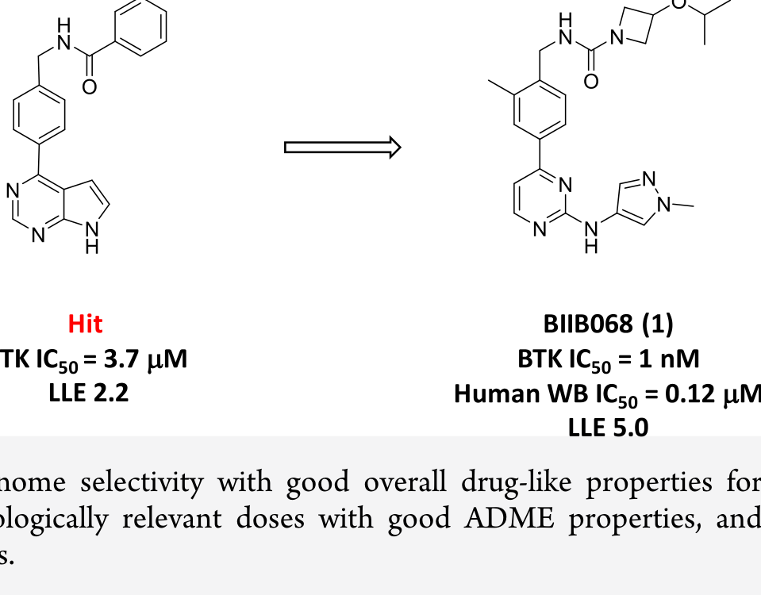
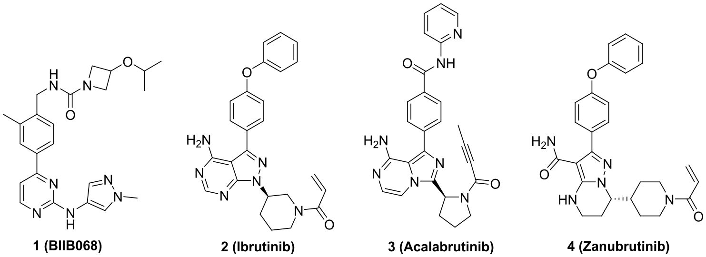
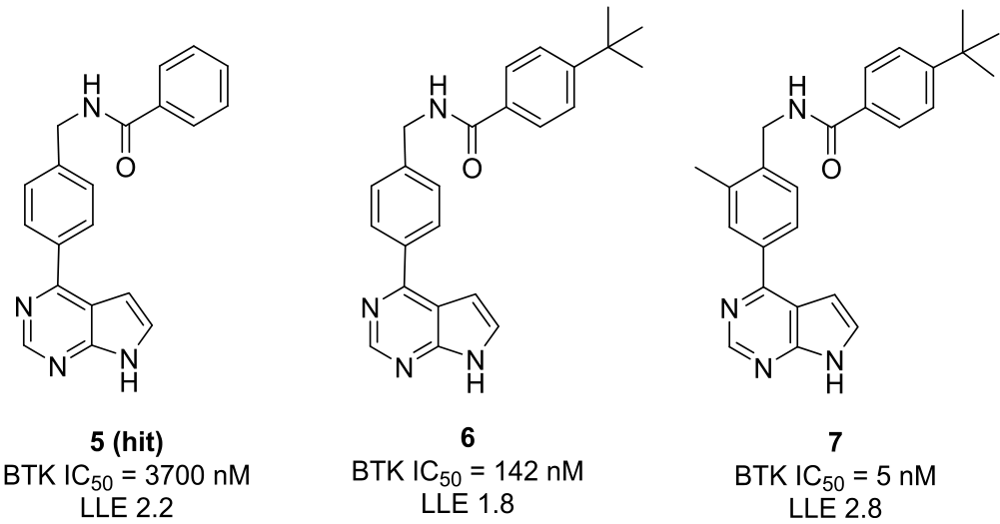
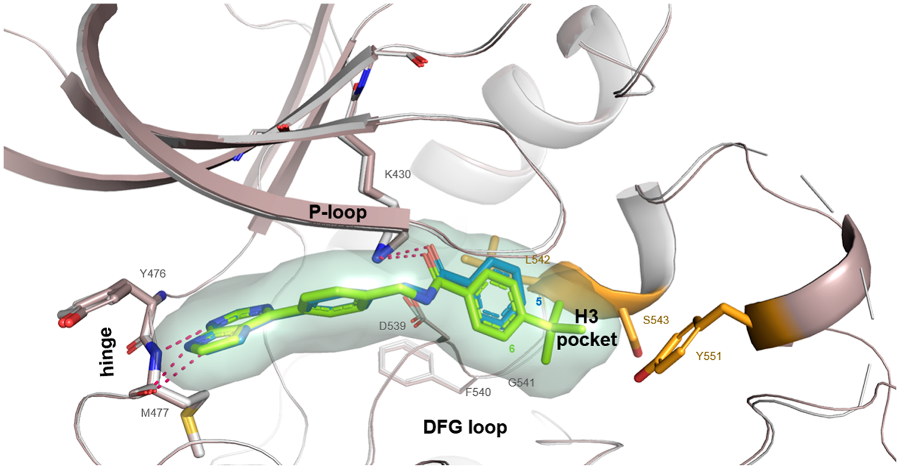
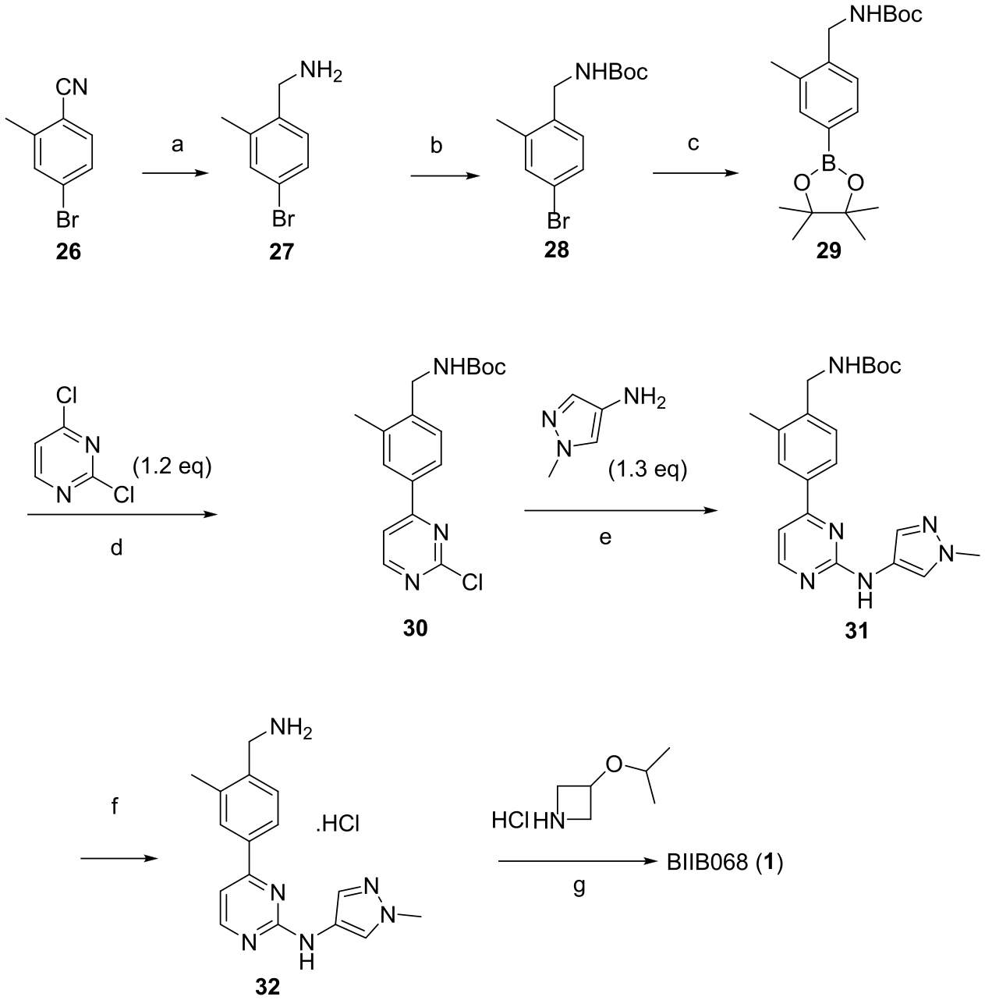
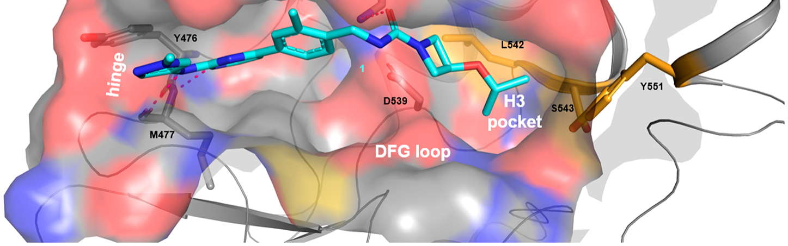
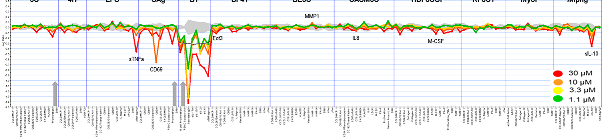
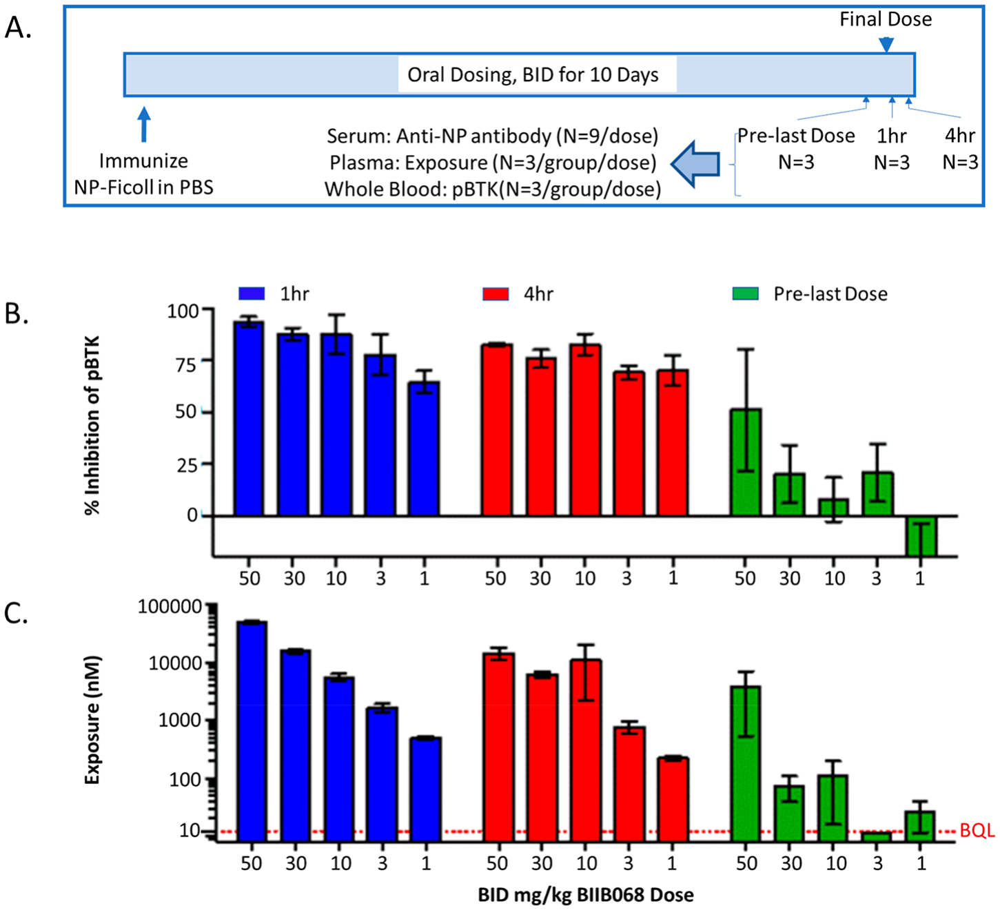
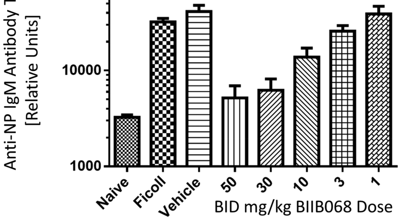
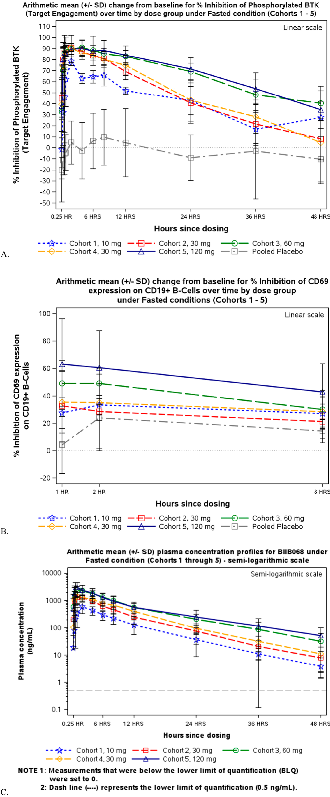

Penemuan BIIB068: Inhibitor Tirosin Kinase Bruton (BTK) Reversibel, Sangat Selektif, dan Berkhasiat Oral untuk Terapi Penyakit Autoimun Kronis
Bagaimana tim kimia medisinal Biogen merancang BIIB068 melalui sekuestrasi konformasi inaktif pada kantung alosterik H3 untuk menaklukkan keterbatasan toksisitas inhibitor kovalen ireversibel—membuka era baru imunomodulasi presisi untuk Lupus Eritematosus Sistemik (SLE) hingga sukses melewati uji klinis Fase I pada manusia.

01. Peran Sentral BTK dalam Imunopatologi & Dilema Inhibitor Kovalen
Tirosin kinase Bruton (Bruton’s tyrosine kinase, BTK) merupakan anggota non-reseptor dari famili kinase Tec yang memegang kendali sentral dalam kaskade transduksi sinyal sistem imun adaptif dan bawaan (imun bawaan). BTK diekspresikan secara melimpah pada limfosit B dan sel-sel turunan mieloid—termasuk monosit, makrofag, neutrofil, dan basofil—namun tidak diekspresikan pada sel T matang maupun sel sel pembunuh alami (natural killer) (NK).
Aktivasi reseptor sel B (B-cell receptor, BCR) memicu autofosforilasi dan aktivasi BTK, yang kemudian memfosforilasi fosfolipase C gamma-2 (PLCγ2). Peristiwa biokimia ini menginisiasi pelepasan kalsium intraseluler dan aktivasi faktor transkripsi kunci seperti NF-κB dan NFAT, yang mengarahkan proliferasi sel B, diferensiasi menjadi sel plasma penghasil antibodi, dan sekresi sitokin pro-inflamasi. Pada sel mieloid, BTK memediasi aktivasi reseptor Fc (FcγR dan FcεR), memicu pelepasan mediator inflamasi, ledakan oksidatif neutrofil, dan sekresi TNF-α yang merusak jaringan.
Aktivasi patologis jalur BCR dan FcR terbukti menjadi pendorong utama pada berbagai kelainan autoimun yang melemahkan tubuh, khususnya Lupus Eritematosus Sistemik (Systemic Lupus Erythematosus, SLE), Artritis Reumatoid (RA), dan vaskulitis autoimun. Pada pasien SLE, produksi autoantibodi patogenik (seperti anti-dsDNA) oleh sel B hiperaktif bersamaan dengan deposisi kompleks imun di ginjal (nefritis lupus) menyebabkan kerusakan organ terminal.

Kesuksesan inhibitor BTK kovalen ireversibel generasi awal seperti ibrutinib, acalabrutinib, dan zanubrutinib telah merevolusi onkologi hematologi, khususnya untuk leukemia limfositik kronis (CLL) dan limfoma sel mantel (MCL). Inhibitor kovalen ini bekerja dengan membentuk ikatan kovalen permanen antara gugus elektrofilik (akrilamida) dengan residu nukleofilik sistein 481 (Cys481) di situs aktif BTK.
Dalam onkologi onkogenik, risiko toksisitas berat dapat ditoleransi demi memperpanjang harapan hidup pasien. Namun, pada penyakit autoimun kronis seperti SLE dan RA di mana pasien memerlukan pengobatan harian sepanjang hayat, modifikasi kovalen ireversibel menimbulkan risiko klinis yang substansial:
1. Reaktivitas Silang Non-Target: Elektrofil akrilamida dapat bereaksi secara kovalen dengan kinase lain yang memiliki sistein homolog (seperti EGFR Cys797, ITK Cys442, TEC, BLK, BMX), memicu toksisitas kulit, diare parah, hepatotoksisitas, dan fibrilasi atrium.
2. Haptenisasi & Toksisitas Idiosinkratik: Adisi kovalen permanen molekul sintetis pada protein tubuh dapat bertindak sebagai hapten, memicu respon imun baru yang tidak terduga atau reaksi hipersensitivitas fatal pada populasi pasien yang sudah memiliki disregulasi imun.
3. Ketiadaan Penghentian Cepat (penghentian efek obat secara cepat): Jika pasien autoimun mengalami infeksi bakteri akut atau memerlukan operasi darurat, efek inhibitor kovalen baru hilang setelah protein BTK baru disintesis kembali oleh tubuh (beberapa hari), meningkatkan risiko komplikasi infeksi oportunistik dan pendarahan bedah.
Oleh karena itu, tim peneliti di Biogen memusatkan target untuk menciptakan inhibitor BTK reversibel non-kovalen yang memenuhi kriteria ketat kimia medisinal: memiliki afinitas sub-nanomolar, selektivitas kinom mutlak melampaui seluruh famili kinase manusia (termasuk sesama famili Tec), sifat fisikokimia yang mendukung formulasi oral harian, serta jendela keamanan yang lebar dalam studi toksikologi GLP.
02. Skrining Awal & Pengungkapan Kantung Alosterik H3
Upaya penemuan dimulai dari kampanye skrining berkecepatan tinggi (high-throughput screening, HTS) terhadap repositori senyawa Biogen. Skrining ini mengidentifikasi serangkaian senyawa bertulang punggung heterosiklik imidazopirazin. Di antara senyawa awal yang menunjukkan aktivitas inhibisi yang dapat direproduksi adalah Hit 5.

Hit 5 memiliki potensi enzimatik awal yang moderat dengan nilai `BTK IC_50 = 3700 nM` (3.7 µM). Struktur kristal sinar-X dari domain kinase BTK yang dikomplekskan dengan Hit 5 (PDB ID: 6TFL) berhasil dipecahkan pada resolusi 1.95 Å. Kristalografi mengungkapkan bahwa cincin imidazo[1,2-a]pirazin bertindak sebagai hinge-binding motif yang membentuk ikatan hidrogen bidentat dengan rantai utama residu Met477 di daerah hinge BTK.
Yang paling menarik, bagian benzamida dari Hit 5 menonjol keluar dari jalur pengikatan ATP konvensional dan mengarah langsung ke sebuah rongga hidrofobik tersembunyi yang dinamakan kantung H3 (H3 pocket). Kantung ini terbentuk di bawah loop aktivasi saat residu Tyr551 berada dalam orientasi tidak terfosforilasi (konformasi inaktif).
| Senyawa | Variasi Substituen (R¹ / H3 Binder) | BTK `IC_50` (nM) | BTK `K_d` (nM) | LLE | ClogP |
|---|---|---|---|---|---|
| Hit 5 | Benzamida tak tersubstitusi | 3700 | 1500 | 1.9 | 3.6 |
| Senyawa 6 | para-tert-Butilbenzamida | 142 | 78 | 2.1 | 5.0 |
| Senyawa 7 | para-tert-Butil + 2-Metil pada fenil pusat | 5 | 2.4 | 2.8 | 5.5 |
| Senyawa 8 | para-Trifluorometilbenzamida | 28 | 14 | 2.4 | 4.9 |
| Senyawa 9 | para-Siklopropilbenzamida | 11 | 5.2 | 2.7 | 4.8 |
| Senyawa 10 | para-iso-Propilbenzamida | 38 | 19 | 2.3 | 5.1 |
Berdasarkan penampakan ruang kosong di dalam kantung H3 pada struktur kristal Hit 5, tim kimia medisinal merancang analog dengan substitusi lipofilik pada posisi para cincin fenil benzamida. Penambahan gugus tert-butil menghasilkan Senyawa 6, yang memicu lonjakan afinitas pengikatan sebesar 26 kali lipat dengan `BTK IC_50 = 142 nM`.

Struktur kristal Senyawa 6 (PDB ID: 6TFO) memvalidasi hipotesis desain secara spektakuler: gugus tert-butil mengisi secara komplementer ceruk hidrofobik yang dibentuk oleh rantai samping residu Leu542, Phe540, dan cincin aromatik Tyr551. Interaksi van der Waals yang rapat ini menstabilkan putaran cincin fenil Tyr551, mencegahnya bertransisi ke konformasi aktif di mana tirosin dapat diakses oleh fosforilasi hulu oleh kinase famili Src (seperti LYN atau SYK).
03. Desain Berbasis Struktur (SBDD) Menuju Kelahiran BIIB068
Meskipun Senyawa 6 dan Senyawa 7 (`IC_50 = 5 nM`) menunjukkan potensi yang sangat tinggi, keduanya memiliki lipofilisitas yang berlebihan (`ClogP > 5.0`) dan efisiensi ligan lipofilik (efisiensi ligan lipofilik (Lipophilic Ligand Efficiency), `LLE = pIC_50 - ClogP`) yang rendah (`LLE < 3.0`). Molekul yang terlalu hidrofobik seperti ini umumnya menderita kelarutan air yang buruk, pengikatan protein plasma yang terlampau ketat, serta metabolisme oksidatif cepat oleh sitokrom P450 di hati.
Oleh karena itu, strategi optimasi multi-dimensi dijalankan melalui empat langkah kunci:
A. Eksplorasi Kantung P-Loop & Substitusi Orto-Metil
Struktur kristal mengindikasikan bahwa cincin fenil pusat yang menghubungkan hinge binder dan benzamida berada tepat di bawah glycine-rich loop (P-loop, residu Gly409–Gly414). Introduksi gugus metil pada posisi C2 cincin fenil pusat menghasilkan Senyawa 7 (`IC_50 = 5 nM`). Gugus metil orto ini menciptakan hambatan sterik internal yang mengunci sudut dihedral molekul pada orientasi ortogonal yang mendekati konformasi bioaktifnya di situs pengikatan, sehingga meminimalkan penalti entropi saat pengikatan protein terjadi.
B. Penggantian H3 Binder dengan Heterosiklus Isothiazole
Untuk memangkas lipofilisitas tanpa mengorbankan interaksi van der Waals di kantung H3, cincin fenil lipofilik digantikan dengan heterosiklus kaya elektron. Pilihan terbaik jatuh pada cincin 5-tert-butilisotiazol-3-karboksamida (Senyawa 11). Isotiazole mempertahankan polarisabilitas atom sulfur yang dapat membentuk interaksi dispersi kuat dengan Phe540 sembari menurunkan nilai ClogP secara substansial (`IC_50 = 3 nM`).
| Senyawa | Hinge Binder | H3 Heterosiklus | BTK `IC_50` (nM) | Klirens Hepatosit Tikus (`µL/min/10⁶` sel) | Permeabilitas RRCK (`10⁻⁶ cm/s`) |
|---|---|---|---|---|---|
| Senyawa 7 | Imidazo[1,2-a]pirazin | p-t-Butilfenil | 5.0 | >120 (Sangat Cepat) | 4.2 |
| Senyawa 11 | Imidazo[1,2-a]pirazin | t-Butilisotiazol | 3.0 | 95 (Cepat) | 8.5 |
| Senyawa 13 | 2-Aminopirimidin | t-Butilisotiazol | 2.0 | 18 (Stabil) | 19.4 |
| Senyawa 15 | 2-Aminopiridin | t-Butilisotiazol | 24.0 | 34 | 14.1 |
C. Transformasi Hinge Binder Menuju 2-Aminopirimidin
Inti imidazopirazin awal memiliki kelemahan intrinsik berupa metabolisme fase I yang cepat di mikrosom hati karena oksidasi cincin aromatik kaya elektron. Tim kimia medisinal mengganti sistem bisiklik imidazopirazin dengan cincin monosiklik 2-aminopirimidin (Senyawa 13).
Modifikasi ini terbukti menjadi terobosan penting: 2-aminopirimidin mempertahankan ikatan hidrogen bidentat donor-akseptor yang sempurna terhadap tulang punggung Met477, tetapi secara dramatis menurunkan klirens hepatosit in vitro dari 95 menjadi 18 µL/min/10⁶ sel, sekaligus mendongkrak permeabilitas membran sel hingga dua kali lipat.
D. Introduksi Linker Pirazol & Kap Polar Solvent-Exposed (BIIB068)
Langkah terakhir adalah menyambungkan hinge binder dengan fenil pusat melalui linker heterosiklik yang tepat. Penggantian ikatan langsung dengan cincin pirazol pada posisi C5 pirimidin (menghasilkan Senyawa 21, `IC_50 = 0.2 nM`) memberikan orientasi vektor ideal yang memposisikan atom nitrogen pirazol untuk membentuk ikatan hidrogen tambahan dengan residu gatekeeper Thr474.
Pada ujung distal yang menghadap ke pelarut eksternal (area yang menghadap pelarut (solvent-exposed region)), ditambahkan gugus 3-isopropoksiazetidin urea. Gugus fungsional unik ini memberikan sifat fisikokimia yang luar biasa: meningkatkan kelarutan kinetik (>50 µg/mL pada pH asam lambung 1.5 dan >10 µg/mL pada pH usus 6.8), menurunkan kecenderungan agregasi, dan mengoptimalkan ikatan bebas fraksi plasma (`f_u`). Kombinasi sempurna ini melahirkan BIIB068 (Senyawa 1).
| Parameter Fisikokimia & Biokimia | BIIB068 (Senyawa 1) | Senyawa 13 | Target Profil Kandidat Obat |
|---|---|---|---|
| Berat Molekul (BM, g/mol) | 500.56 | 424.48 | < 550 |
| BTK Potensi Enzimatik (`IC_50`) | 1.0 nM | 2.0 nM | < 5.0 nM |
| BTK Konstanta Disosiasi SPR (`K_d`) | 0.3 nM | 0.8 nM | < 1.0 nM |
| Inhibisi pBTK Darah Utuh Manusia (`IC_50`) | 0.12 µM (120 nM) | 0.45 µM | < 0.25 µM |
| Efisiensi Ligan Lipofilik (LLE) | 5.0 | 3.4 | > 4.5 |
| Koefisien Partisi Lipofilik (`log D_7.4`) | 2.32 | 3.65 | 1.5 – 3.0 |
| Kelarutan Kinetik pH 1.5 / pH 6.8 | >50 / >10 µg/mL | 15 / 2 µg/mL | >10 µg/mL |
| Stabilitas Mikrosomal Manusia (`t_1/2`) | > 120 Menit | 65 Menit | > 60 Menit |

04. Bukti Kristalografi Sinar-X & Sekuestrasi Konformasi Inaktif H3
Untuk mengonfirmasi mekanisme interaksi molekuler pada tingkat atom, struktur kristal ko-kompleks domain kinase BTK manusia dengan BIIB068 dipecahkan pada resolusi ultra-tinggi 1.60 Å (PDB ID: 6TFP).

Struktur kristal resolusi tinggi ini memaparkan jaringan ikatan yang sangat harmonis:
- Jangkar Bidentat Hinge: Atom nitrogen cincin pirimidin bertindak sebagai akseptor ikatan hidrogen terhadap gugus amida tulang punggung Met477 (`N···H-N = 2.8 Å`), sementara gugus amino eksosiklik bertindak sebagai donor ikatan hidrogen ke atom oksigen karbonil tulang punggung Met477 (`N-H···O = 2.9 Å`).
- Interaksi Selektivitas Gatekeeper: Cincin pirazol terletak tepat di sebelah residu gatekeeper Thr474, di mana atom N2 pirazol membentuk ikatan hidrogen dengan gugus hidroksil rantai samping treonin. Jarak dan geometri ini memberikan diskriminasi yang sangat tajam terhadap kinase lain yang memiliki residu gatekeeper yang lebih besar (seperti metionin atau fenilalanin).
- Sekuestrasi Inaktif Tyr551: Fragmen 5-tert-butilisotiazol tertanam sempurna di dalam kantung H3. Cincin isotiazol membentuk interaksi penumpukan pi-pi parsial dengan Phe540, sedangkan substituen tert-butil mengisi ceruk lipofilik yang diapit oleh Leu542 dan Ser543. Posisi ini memaksa rantai samping fenol Tyr551 tetap tertutup di dalam saku interior protein, menguncinya dalam konformasi non-fosforilasi (inaktif).
- Solvent Solvation Vector: Ekor 3-isopropoksiazetidin urea terproyeksi keluar ke lingkungan pelarut di antara Asp539 dan Arg525, memberikan toleransi struktur yang tinggi dan memungkinkan modifikasi hidrofilik tanpa mengganggu geometri inti pengikatan.
05. Profil Selektivitas Kinom Mutlak & Karakterisasi Seluler BioMAP
Salah satu tantangan paling monumental dalam pengembangan inhibitor kinase molekul kecil adalah selektivitas kinom. Genom manusia menyandikan lebih dari 500 kinase yang memiliki kemiripan struktur kantung ATP yang tinggi. Inhibitor kovalen seperti ibrutinib dikenal menghambat kinase non-target secara signifikan, termasuk ITK (yang mengganggu fungsi sel T) dan EGFR (yang memicu efek samping dermatologis dan gastrointestinal).
BIIB068 dievaluasi terhadap panel komprehensif 395 kinase manusia menggunakan uji pengikatan kompetisi ATP. Hasilnya sangat luar biasa: BIIB068 menunjukkan selektivitas >400 kali lipat terhadap setiap kinase yang diuji!
| Target Kinase | Famili Kinase | BIIB068 `IC_50` (nM) | Faktor Selektivitas (vs BTK) | Catatan Biologis & Klinis |
|---|---|---|---|---|
| BTK (Target Utama) | Tec | 1.0 | 1× | Target terapi BCR & FcR pada sel B & mieloid |
| BMX | Tec | 620 | 620× | Homolog terdekat famili Tec |
| TEC | Tec | 420 | 420× | Tirosin kinase diekspresikan pada sel hematopoietik |
| ITK | Tec | >10,000 | >10,000× | Kinase sel T penting (keamanan imunitas seluler) |
| TXK | Tec | >10,000 | >10,000× | Famili Tec pada sel T |
| EGFR | TK / ErbB | >10,000 | >10,000× | Penghindaran ruam kulit dan diare parah |
| JAK2 | Jak | >10,000 | >10,000× | Penghindaran penekanan sumsum tulang belakang |
| SRC / LCK / LYN | Src | >10,000 | >10,000× | Kinase penginisiasi pensinyalan reseptor imun |
Bahkan terhadap anggota famili Tec kinase yang paling dekat (BMX dan TEC), BIIB068 mempertahankan marjin selektivitas masing-masing 620 kali dan 420 kali lipat. Terhadap ITK—yang sering kali dihambat kuat oleh ibrutinib sehingga menekan imunitas sel T dan meningkatkan kerentanan infeksi oportunistik—BIIB068 sama sekali tidak aktif (`IC_50 > 10 µM`, selektivitas >10.000 kali lipat). Hal ini memastikan bahwa terapi BIIB068 melumpuhkan aktivasi antibodi sel B tanpa melumpuhkan imunitas protektif sel T pasien.

Dalam pengujian fenotipik BioMAP Diversity PLUS (12 sistem ko-kultur sel primer manusia dengan 148 pembacaan biomarker klinis), BIIB068 menunjukkan aktivitas biologis yang sangat terfokus:
- Sistem BT (Limfosit B dan Sel Mononuklear Darah Tepi yang Distimulasi BCR/TCR): Penekanan kuat dan tergantung dosis terhadap biomarker sekresi IgG patogenik, interleukin-17A (IL-17A), dan TNF-α.
- Sistem BF4T (Sel Endotel dan Monosit yang Distimulasi Imun): Inhibisi pelepasan sitokin kemoatraktan seperti MCP-1 dan MIP-1α.
- Absennya Sitotoksisitas Primer: Tidak ditemukan penurunan viabilitas sel, integritas membran, atau proliferasi sel fibroblas/endotel normal bahkan pada konsentrasi tertinggi 10 µM, menegaskan indeks terapeutik seluler yang sangat luas.
06. Efikasi In Vivo Hewan & Keberhasilan Uji Klinis Fase I pada Manusia
Sebelum melangkah ke uji klinis pada manusia, profil farmakokinetika (PK) dan farmakodinamika (PD) in vivo BIIB068 dipelajari secara mendalam pada berbagai spesies hewan laboratorium (tikus, anjing, dan monyet Cynomolgus).
| Spesies Hewan | Klirens Plasma (`CL`, L/h/kg) | Volume Distribusi (`V_ss`, L/kg) | Waktu Paruh (`t_1/2`, jam) | Bioavailabilitas Oral (`F`, %) |
|---|---|---|---|---|
| Tikus Sprague-Dawley | 1.1 | 2.8 | 2.6 | 68% |
| Anjing Beagle | 0.32 | 1.9 | 5.2 | 74% |
| Monyet Cynomolgus | 0.48 | 2.2 | 4.1 | 61% |
BIIB068 menunjukkan profil PK praklinis yang istimewa di semua spesies: klirens sistemik rendah hingga sedang, volume distribusi yang memadai melampaui total volume air tubuh (menunjukkan penetrasi jaringan yang sangat baik), waktu paruh eliminasi 2.6–5.2 jam, dan bioavailabilitas oral tinggi berkisar antara 61% hingga 74%.
Efikasi In Vivo pada Model Tantangan Antigen TI-2
Kemampuan BIIB068 untuk memblokade respon imun humoral in vivo diuji menggunakan model respon antibodi terhadap antigen T-independent type 2 (TI-2) pada tikus yang diimunisasi dengan hapten nitrophenyl-conjugated Ficoll (NP-Ficoll). Respon imun TI-2 sepenuhnya bergantung pada pensinyalan BCR utuh yang dimediasi oleh BTK pada limfosit B zona marginal splenik.


Pemberian oral BIIB068 secara teratur dua kali sehari (BID) memberikan penekanan titer antibodi spesifik anti-NP IgM yang luar biasa kuat:
- Dosis 50 mg/kg BID menghasilkan supresi produksi IgM sebesar 93%.
- Dosis 30 mg/kg BID menghasilkan supresi sebesar 90%.
- Dosis 10 mg/kg BID menghasilkan supresi sebesar 71%.
- Dosis efektif median (`ED_50`) dihitung sebesar 4.4 mg/kg, berkorelasi erat dengan ambang batas paparan plasma yang mempertahankan inhibisi pBTK rata-rata di atas 80% sepanjang interval pemberian dosis.
Toksikologi GLP Preklinis 13 Minggu
Dalam studi toksisitas regulatori Good Laboratory Practice (GLP) selama 13 minggu pada tikus dan monyet Cynomolgus, BIIB068 menunjukkan profil keamanan yang sangat baik:
- Tikus: Tingkat Tanpa Efek Merugikan yang Teramati (tingkat tanpa efek merugikan yang teramati, NOAEL) ditetapkan pada 50 mg/kg/hari.
- Monyet: Nilai NOAEL ditetapkan pada 100 mg/kg/hari, menghasilkan kelipatan paparan (marjin kelipatan paparan) >20 kali lipat di atas proyeksi paparan terapeutik klinis pada manusia.
- Tidak ditemukan bukti hepatotoksisitas, nefrotoksisitas, atau vaskulitis sistemik yang sering kali menjadi momok kegagalan kandidat obat inhibitor kovalen.
Hasil Uji Klinis Fase I pada Manusia Sehat (NCT02829541)
Didukung oleh data praklinis yang solid, BIIB068 dilanjutkan ke uji klinis Fase I perdana pada manusia (First-in-Human, FIH) dengan nomor registrasi ClinicalTrials.gov NCT02829541. Studi acak, tersamar ganda, terkontrol plasebo ini mengevaluasi keamanan, tolerabilitas, farmakokinetika, dan farmakodinamika formulasi tablet oral BIIB068 dalam rentang dosis tunggal bertingkat (peningkatan dosis tunggal bertahap, SAD) mulai dari 10 mg hingga 120 mg pada pria dan wanita sehat.

| Kelompok Dosis Oral (SAD) | `C_max` Puncak (ng/mL) | `T_max` Waktu Puncak (jam) | `AUC_0-24h` (`ng·h/mL`) | Waktu Paruh `t_1/2` (jam) | Inhibisi pBTK Puncak (%) | Inhibisi pBTK Jam ke-24 (%) |
|---|---|---|---|---|---|---|
| 10 mg | 84.2 | 1.2 | 412 | 6.4 | 58% | 12% |
| 30 mg | 276.0 | 1.5 | 1480 | 6.8 | 84% | 45% |
| 60 mg | 592.0 | 1.5 | 3240 | 7.2 | 96% | 88% |
| 120 mg | 1180.0 | 2.0 | 6890 | 8.5 | 99% | 94% |
Hasil uji klinis Fase I menetapkan tonggak sejarah farmakologis penting:
- Tolerabilitas Sempurna: BIIB068 ditoleransi dengan sangat baik pada seluruh kohort dosis tanpa efek samping serius (kejadian tidak diinginkan yang serius, SAE). Tidak ditemukan tanda-tanda toksisitas hematologi, elevasi enzim transaminase hati (ALT/AST), ataupun gangguan repolarisasi jantung (interval QT).
- Farmakokinetika Terprediksi: Konsentrasi plasma meningkat secara linier dan proporsional terhadap dosis. Obat diserap cepat (`T_max` 1.2–2.0 jam) dengan waktu paruh eliminasi terminal `t_1/2` berkisar antara 6.4 hingga 8.5 jam, mendukung regimen dosis oral satu atau dua kali sehari.
- Pembuktian Farmakodinamika (pembuktian mekanisme kerja biologis): Evaluasi fosforilasi pBTK pada leukosit darah utuh manusia yang distimulasi secara eks vivo menunjukkan bahwa dosis tunggal ≥60 mg mampu mencapai penghambatan pBTK melampaui 95% dan mempertahankan tingkat supresi target di atas 90% hingga 24 jam penuh pasca pemberian.
Penemuan BIIB068 menandai kemenangan paradigma kimia medisinal modern berbasis struktur (SBDD). Dengan memanfaatkan ceruk alosterik H3 untuk menstabilkan konformasi inaktif tirosin 551, tim Biogen berhasil menciptakan inhibitor BTK reversibel pertama yang menggabungkan afinitas sub-nanomolar (`IC_50 = 1 nM`), selektivitas kinom absolut (>400 kali lipat terhadap 395 kinase), profil keamanan praklinis yang bersih, dan bukti keterikatan target biologis (target engagement) sempurna pada darah manusia dalam uji Fase I.
BIIB068 meletakkan landasan klinis kokoh bagi terapi penyakit autoimun generasi berikutnya, membuktikan bahwa inhibisi jalur BCR dan FcR dapat dicapai secara aman dan tuntas tanpa ketergantungan pada modifikasi kovalen ireversibel.
- Judul Asli: Discovery of BIIB068: A Selective, Potent, Reversible Bruton’s Tyrosine Kinase Inhibitor as an Orally Efficacious Agent for Autoimmune Diseases
- Penulis: Bin Ma, Tonika Bohnert, Kevin L. Otipoby, Steven B. Cohen, Ding-Geng Chen, Scott Jenkins, Jin-Rui Liu, Susan S. S. Westaway, Ronald M. van Dongen, David A. Auld, Jeremy A. Simpson, Jeffrey P. Ciavarri, and Brian T. Hopkins*
- Afiliasi: Biogen, 225 Binney Street, Cambridge, Massachusetts 02142, USA
- Jurnal: Journal of Medicinal Chemistry, Vol. 63, Iss. 21, Hal. 12574–12594 (2020)
- Penerbit: American Chemical Society (ACS Publications)
- DOI: 10.1021/acs.jmedchem.0c00993
- PDB ID: 6TFP (BTK-BIIB068), 6TFL (BTK-5), 6TFO (BTK-6), 6TFM (BTK-13)
- Skrining & Desain: HTS Senyawa Imidazopirazin, SBDD Siklis, Optimasi LLE
- Kristalografi Sinar-X: Kompleks BTK Resolusi Tinggi 1.60 Å (Beamline Synchrotron)
- Panel Kinom: Ambit KINOMEscan & Caliper Mobility Shift Assay (395 Kinase)
- Uji Fenotipik: BioMAP Diversity PLUS (12 Sistem Ko-kultur Primer Manusia)
- Model In Vivo Hewan: TI-2 Antigen Challenge (NP-Ficoll) pada Tikus Sprague-Dawley
- Uji Klinis Fase I: NCT02829541 (Double-Blind SAD/MAD Tablet Oral Relawan Sehat)